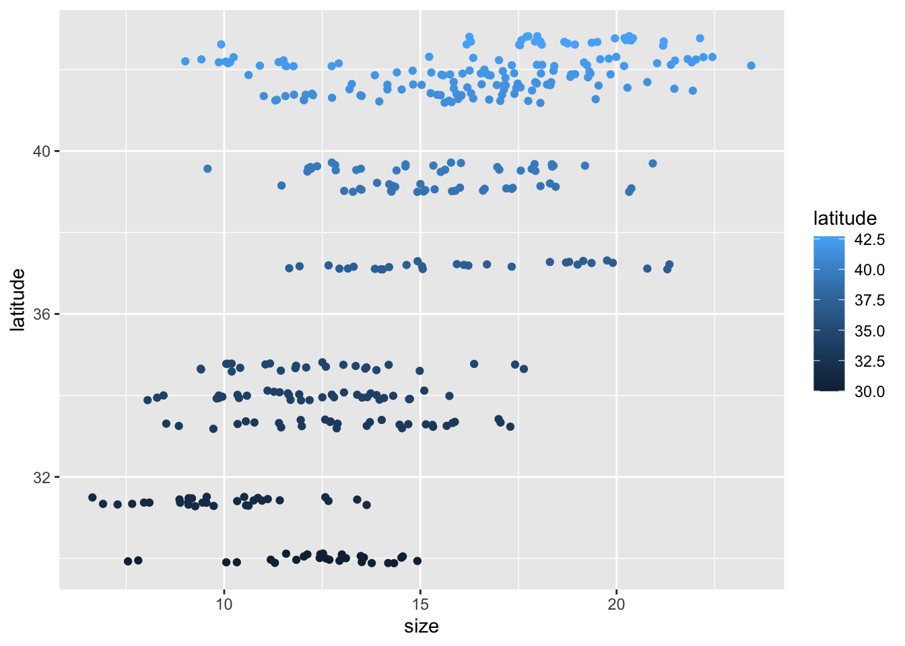

── Attaching packages ─────────────────────────────────────── tidyverse 1.3.2 ──
✔ ggplot2 3.3.6 ✔ purrr 0.3.4
✔ tibble 3.1.8 ✔ dplyr 1.0.9
✔ tidyr 1.2.0 ✔ stringr 1.4.0
✔ readr 2.1.2 ✔ forcats 0.5.1
── Conflicts ────────────────────────────────────────── tidyverse_conflicts() ──
✖ dplyr::filter() masks stats::filter()
✖ dplyr::lag() masks stats::lag()
Attaching package: 'kableExtra'
The following object is masked from 'package:dplyr':
group_rowsmorning activity
This graph shows the relationship between fiddler crab size in millimeters and latitude throughout the eastern coast of the United States. In general, crab sizes increase toward higher latitude.

This table shows the mean size, standard deviation, and count of fiddler crabs at each Site.
| Site | Mean Size (mm) | Size Standard Deviation (mm) | Count |
|---|---|---|---|
| BC | 16.20 | 4.81 | 37 |
| CC | 16.82 | 2.05 | 27 |
| CT | 14.69 | 2.36 | 33 |
| DB | 15.60 | 2.12 | 30 |
| GTM | 12.40 | 1.80 | 28 |
| JC | 15.27 | 2.72 | 30 |
| NB | 17.14 | 2.29 | 29 |
| NIB | 13.29 | 2.42 | 30 |
| PIE | 18.50 | 2.30 | 28 |
| RC | 12.49 | 2.34 | 25 |
| SI | 9.85 | 1.79 | 30 |
| VCR | 16.34 | 2.94 | 30 |
| ZI | 12.06 | 2.01 | 35 |
Citation:
Johnson, D. 2019. Fiddler crab body size in salt marshes from Florida to Massachusetts, USA at PIE and VCR LTER and NOAA NERR sites during summer 2016. ver 1. Environmental Data Initiative. https://doi.org/10.6073/pasta/4c27d2e778d3325d3830a5142e3839bb (Accessed 2021-05-27).
Johnson DS, Crowley C, Longmire K, Nelson J, Williams B, Wittyngham S. The fiddler crab, Minuca pugnax, follows Bergmann's rule. Ecol Evol. 2019;00:1–9. https://doi.org/10.1002/ece3.5883